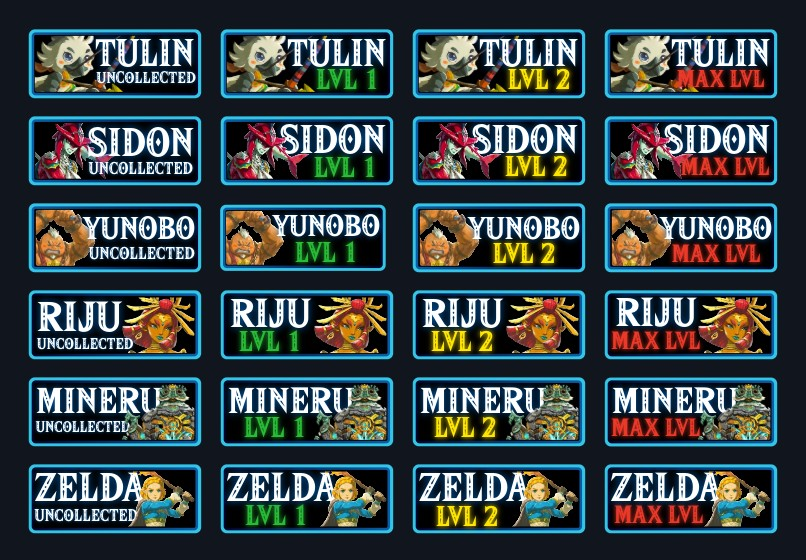

Turning Stern's Avengers machine into Tears of the Kingdom, one file at a time
The working folder for this is 21,143 files, most of them audio. I pull the originals out with Pinball Browser, sort them into scenes, and replace them with new art, video and sound. Two of the six characters are on the machine so far, and the other four are ready to upload.
How I did it →